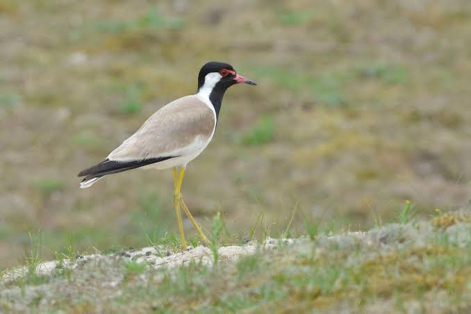

lapwing
Birds
Vanellinae are any of various crested plovers, family Charadriidae, noted for its slow, irregular wingbeat in flight and a shrill, wailing cry. Its length is 10–16 inches. They are a subfamily of medium-sized wading birds which also includes the plovers and dotterels.
Scientific name: Vanellinae
Phylum: Chordata
Order: Shorebirds
Rank: Subfamily
Higher classification: Charadriidae
Class: Aves
Lapwing, any of numerous species of birds of the plover family, Charadriidae (order Charadriiformes), especially the Eurasian lapwing, Vanellus vanellus, of farmlands and grassy plains.
The name lapwing, which refers to the birds’ slow wingbeat, is sometimes applied broadly to members of the subfamily Vanellinae. Lapwings are about 30 cm (12 inches) long, with broad, rounded wings.
Several species have crests, and some have wing spurs (sharp projections at the bend of the wing for use in fighting).
The Eurasian lapwing is green-glossed black above with white cheeks. The throat and breast are black, the belly is white, and the tail is white with a black band.
This species has a notable crest. It breeds in Britain, in much of Europe, and across temperate Asia to eastern China. Some northern birds go south in winter, particularly to northern Africa. The brownish, black-marked eggs of this species are the plover eggs of commerce.
There are about 24 other species of lapwings in South America, Africa, southern Asia, Malaya, and Australia. The crowned lapwing (Stephanibyx coronatus), of Africa, has a black cap with a white ring around it.
The red-wattled lapwing, Vanellus (sometimes Lobivanellus) indicus, and the yellow-wattled lapwing (V. malabaricus), of southern Asia, have wattles on the face. Others are the gray-headed lapwing (Microsarcops cinereus), of eastern Asia, and the long-toed lapwing (Hemiparra crassirostris), of Africa.
Biology of lapwing
Evolution
The fossil record of the Vanellinae is scant and mostly recent in origin; no Neogene lapwings seem to be known. On the other hand, it appears as if early in their evolutionary history the plovers, lapwings and dotterels must have been almost one and the same, and they are hard to distinguish osteologically even today.
Thus, since the Red-kneed Dotterel is so distinct that it might arguably be considered a monotypic subfamily, reliably dating its divergence from a selection of true lapwings and plovers would also give a good idea of charadriid wader evolution altogether.
A mid-Oligocene – c.28 mya (million years ago) – fossil from Rupelmonde in Belgium has been assigned to Vanellus, but even if the genus were broadly defined, it is entirely unclear if the placement is correct.
Its age ties in with the appearance of the first seemingly distinct Charadriinae at about the same time, and with the presence of more basal Charadriidae a few million years earlier.
However, the assignment of fragmentary fossils to Charadriinae or Vanellinae is not easy. Thus, it is very likely that the charadriid waders originate around the Eocene-Oligocene boundary – roughly 40–30 mya – but nothing more can be said at present.
If the Belgian fossil is not a true lapwing, there are actually no Vanellinae fossils known before the Quaternary.